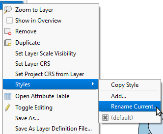
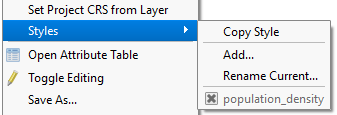

The current style is named default. Let's give it a more meaningful name.
In the Layers panel, right-click the Wake BlockGoup 2010 layer and choose Styles > Rename Current...

Set Style name to population_density and click OK.
To confirm that the style was renamed, right-click the Wake BlockGoup 2010 layer and hover Styles. There should be a population_density style at the bottom.
